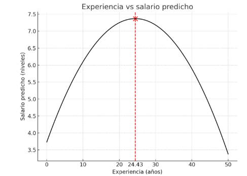

Clase 6 · Interpretación: logaritmos, cuadráticas e interacciones
Contenido oficial de la semana
Esta página reproduce íntegras y en orden las diapositivas de la cátedra del viernes de la
semana 6 (sem6/clase7.tex, 13 láminas). Los bloques Interactivo, los casos y las preguntas
son material adicional para estudiar.
Cómo estudiar esta página
La clase está ordenada en 4 temas. Cada tema parte con una pregunta guía, sigue con las láminas y los simuladores, y termina con ✍️ preguntas de selección múltiple (cada alternativa incorrecta explica por qué no lo es) y un 🧪 ejercicio de R que puedes editar y ejecutar aquí mismo, sin instalar nada. Los 4 ejercicios de R en un solo archivo: 📥 clase6.R.
🎯 Objetivos de la sesión
- Interpretar coeficientes en modelos nivel-nivel, log-nivel, nivel-log y log-log, incluida la elasticidad.
- Usar formas cuadráticas para efectos parciales que cambian con el nivel de \(x\), y encontrar su punto de inflexión.
- Interpretar términos de interacción y evaluarlos en valores relevantes.
- Predecir cómo cambian los coeficientes, sus errores estándar y los tests al reescalar variables.
🗓️ Agenda de la cátedra (viernes 18:40 – 21:25)
Haz clic en un tema para ir directo a él.
- 18:401Logaritmos: porcentajes y elasticidadesláminas 1–4 · ✍️ 2 preguntas · 🧪 R
- 19:202Formas cuadráticasláminas 5–7 · ✍️ 2 preguntas · 🧪 R
- 19:55☕ Receso
- 20:053Términos de interacciónláminas 8–9 · ✍️ 2 preguntas · 🧪 R
- 20:404Reescalar variables y resumenláminas 10–13 · ✍️ 2 preguntas · 🧪 R
- 21:15✅ Ideas clave, autoevaluación y cierre
Interpretación: no linealidades, interacciones y escala
📄 Diapositivas: sem6/clase7.tex · 13 láminas
Logaritmos: porcentajes y elasticidades
¿Cómo cambia la lectura de β cuando hay logaritmos en el modelo?
Incorporación de no-linealidades
-
Variable dependiente e independiente en niveles:
\(E(y_i \mid x_{1,i}, \ldots) = \beta_0 + \beta_1 x_{1,i} + \ldots\)
-
→ Ejemplo: \(E(salario_i \mid educ_i) = \beta_0 + \beta_1 educ_i\)
-
\(\beta_1 = \dfrac{\Delta E(y \mid x_{1})}{\Delta x_1}\)
-
Por cada año más de educación se obtiene, en promedio, \(\beta_1\) dólares más de salario.
-
-
Variable dependiente en log e independiente en niveles:
\(E(\log(y_i) \mid x_{1,i}, \ldots) = \beta_0 + \beta_1 x_{1,i} + \ldots\)
-
→ Ejemplo: \(E(\log(salario_i) \mid educ_i) = \beta_0 + \beta_1 educ_i\)
-
\(\beta_1 = \dfrac{\Delta E(\log(y) \mid x_{1})}{\Delta x_1}\approx \dfrac{\Delta \% y}{100\Delta x_1}\)
-
Por cada año más de educación se obtiene, en promedio, un aumento de \(100 \cdot \beta_1 \%\) del salario, manteniendo todas las demás variables constantes.
-
-
Variable dependiente e independiente en logs:
\(E(\log(y_i) \mid x_{1,i}, \ldots) = \beta_0 + \beta_1 \log(x_{1,i}) + \ldots\)
-
→ Ejemplo: \(E(\log(salario_i) \mid educ_i) = \beta_0 + \beta_1 \log(educ_i)\)
-
\(\beta_1 = \dfrac{\Delta E(\log(y) \mid x_{1})}{\Delta \log x_1}\approx \dfrac{\Delta\% y}{ \Delta\% x_1}\)
-
Un aumento de 1% de los años de educación implica, en promedio, un aumento de \(\beta_1 \%\) del salario manteniendo todas las demás variables constantes. Es decir, representa una elasticidad.
-
Variables en logaritmo
-
Diferencias logarítmicas:
\[ \Delta \log(X)= \log(X_1)-\log(X_0)= \log\left (\frac{ X_1}{X_0}\right )=\log\left(1+{\Delta X\over X_0} \right) \] -
Recuerde que en nuestro curso y en el libro \(log(X)=ln(X)\).
-
Sabemos que[^1]:
\[ \log(1+x) \approx x \]
Variables en logaritmo: Caso 1
-
Cada año adicional de educación se asocia con un incremento de \(8{,}3\,\%\) del salario.
-
Como el cambio porcentual es el mismo por cada año adicional de educación, el cambio en el salario en dólares (\(e^{\log(salario)}\)) por un año más de educación aumenta a medida que la educación lo hace.
Variables en logaritmo: Caso 2 - Elasticidad
-
Cuando \(x_j\) e \(y\) se encuentran en logaritmo: un cambio de un 1% en \(x_j\) se asocia a un cambio de \(\beta_j\)% en \(y\).
-
Por ejemplo, se estima la elasticidad de la demanda de vino en Chile.
\[ \hat{\log(\text{cantidad vino})} = 6 - 0,2 \log(\text{precio vino}) \] -
Un aumento de un 1% en el precio del vino corresponde a una caída del 0,2% en la cantidad consumida de vino.
-
Se interpreta como una elasticidad. Por ejemplo, la elasticidad de la demanda de vino con respecto al precio es 0,2.
✍️ Practica · Tema 1
En log(salario) = 0.584 + 0.083·educ, ¿qué significa 0.083?
✅ Lámina 3: modelo log-nivel, 100·β₁ % por unidad de x.
En log(cantidad de vino) = 6 − 0.2·log(precio), si el precio sube 10%, la cantidad…
✅ Es una elasticidad: β₁ × Δ%x (lámina 4).
🧪 Practica en R · Log-nivel y log-log
Simula salarios como los de la lámina 3 y la demanda de vino de la lámina 4, y recupera la semielasticidad y la elasticidad.
set.seed(3)
n <- 500
educ <- sample(6:20, n, replace = TRUE)
salario <- exp(0.584 + 0.083 * educ + rnorm(n, sd = 0.4)) # como la lámina 3
m <- lm(log(salario) ~ educ)
coef(m)
100 * coef(m)["educ"] # % por año, aproximado
100 * (exp(coef(m)["educ"]) - 1) # % por año, exacto
# Log-log: elasticidad de la demanda de vino (lámina 4)
precio <- runif(n, 3000, 15000)
cantidad <- exp(6 - 0.2 * log(precio) + rnorm(n, sd = 0.1))
coef(lm(log(cantidad) ~ log(precio)))
🎯 Reto: cambia 0.083 por 0.3. ¿Qué tanto se alejan ahora la aproximación 100·β y el porcentaje exacto?
Formas cuadráticas
¿Y si el efecto de un año más de experiencia no es siempre el mismo?
Formas cuadráticas
-
El Modelo de Regresión Lineal se refiere a una relación lineal entre los coeficientes que acompañan a los regresores \(X\). Pero las \(X\) pueden tomar cualquier forma.
-
Considere el modelo:
\[ y = \beta_0 + \beta_1 x + \beta_2 x^2 + u \] -
¿Cuál es la interpretación de \(\beta_1\) y \(\beta_2\)?
-
Siempre piensen en términos de derivadas parciales con respecto a la variable explicativa.
-
En este caso, la predicción de \(y\) es:
\[ \hat{y} = \hat{\beta}_0 + \hat{\beta}_1 x + \hat{\beta}_2 x^2 \]Lo que implica que:
\[ \Delta \hat{y} \approx (\hat{\beta}_1 + 2 \hat{\beta}_2 x) \Delta x \Rightarrow \frac{\Delta \hat{y}}{\Delta x} \approx \hat{\beta}_1 + 2 \hat{\beta}_2 x \] -
Noten que ahora un cambio en \(x\) genera un cambio esperado en \(y\) que depende del nivel de \(x\): el efecto parcial de \(x\) en \(y\) es variable.
-
\(\hat{\beta}_1\) es aproximadamente la pendiente de la relación entre \(x\) y \(y\) cuando \(x = 0\).
Ejemplo: efecto de experiencia en salario
-
Considere la siguiente ecuación:
\[ \hat{salario} = 3.73 + 0.298\text{exper} - 0.0061\text{exper}^2 \] -
La experiencia tiene un efecto positivo en el salario pero este efecto va cayendo para niveles altos de experiencia (\(\hat{\beta}_2\) negativo).
-
¿Tiene sentido económico esto?
-
Específicamente, el efecto parcial de la experiencia en el salario es:
\[ \triangle \hat{salario} / \triangle \text{exper} = 0.298 - 2 \cdot 0.0061 \text{exper} \] -
Cuando \(\beta_1\) y \(\beta_2\) tienen distinto signo, hay un valor de \(x\) a partir del cual el efecto ceteris paribus de \(x\) en \(y\) cambia de dirección.
-
En el ejemplo, este valor es \(x = \left|\frac{\beta_1}{2\beta_2}\right| = 24.4\) años.
-
Otros polinomios de mayor grado también pueden ser incluidos en un MRL.
Ejemplo: experiencia y salario
Si bien los coeficientes son lineales, la relación entre experiencia y salario deja de ser lineal.

✍️ Practica · Tema 2
Con salario = 3.73 + 0.298·exper − 0.0061·exper², ¿cuál es el efecto de un año más con 10 años de experiencia?
✅ Lámina 6: Δsalario/Δexper = 0.298 − 2·0.0061·exper.
¿A partir de qué experiencia el efecto se vuelve negativo según la lámina 6?
✅ x = |0.298 / (2·0.0061)| = 24.4.
🧪 Practica en R · La curva de la experiencia
Simula datos con la ecuación de la lámina 6, estímala con I(exper^2) y encuentra el punto de quiebre.
set.seed(6)
n <- 500
exper <- runif(n, 0, 45)
salario <- 3.73 + 0.298 * exper - 0.0061 * exper^2 + rnorm(n, sd = 1.5)
m <- lm(salario ~ exper + I(exper^2))
b <- coef(m)
b
unname(-b["exper"] / (2 * b["I(exper^2)"])) # punto de quiebre (≈ 24.4)
b["exper"] + 2 * b["I(exper^2)"] * c(5, 20, 35) # efecto de un año más
plot(exper, salario, pch = 19, col = "grey70")
curve(b[1] + b[2] * x + b[3] * x^2, add = TRUE, lwd = 3, col = "steelblue")
🎯 Reto: cambia - 0.0061 por + 0.0061. ¿Existe todavía un máximo?
Términos de interacción
¿Vale lo mismo un dormitorio extra en una casa chica que en una grande?
Términos de interacción
-
En ciertas ocasiones el efecto parcial de un regresor \(x\) en la variable dependiente \(y\) puede depender del valor de otro regresor \(z\).
-
En este caso, se incluye en la regresión un término de interacción \(x \times z\).
-
Ejemplo: suponga el siguiente modelo para el precio de una vivienda
\[ \text{precio} = \beta_0 + \beta_1\text{msq} + \beta_2\text{dorm} + \beta_3\text{msq} \cdot \text{dorm} + u \]donde msq son los metros cuadrados de la vivienda y dorm el número de dormitorios.
-
En este caso se cumple que
\[ \frac{\triangle E(\text{precio}|msq,dorm)}{\triangle \text{dorm}} = \beta_2 + \beta_3\text{msq} \] -
Si \(\beta_2 > 0\) y \(\beta_3 > 0\), la ecuación implica que un dormitorio adicional se relaciona con un incremento en el valor de la vivienda, y estos incrementos son mayores en viviendas de más metros cuadrados msq.
-
Para resumir el efecto de dorm en precio se puede evaluar en valores interesantes de msq, como su media, mediana o algún percentil extremo.
-
Por ejemplo, sea el tamaño de la casa promedio \(\bar{msq}\), el efecto de un dorm más:
\[ \frac{\triangle \text{precio}}{\triangle \text{dorm}} = \beta_2 + \beta_3\bar{\text{msq}}. \quad \]
✍️ Practica · Tema 3
En precio = β₀ + β₁msq + β₂dorm + β₃msq·dorm, ¿cuál es el efecto de un dormitorio más?
✅ Lámina 8.
Para resumir el efecto de dorm, la lámina 9 sugiere evaluar β₂ + β₃·msq en…
✅ Por ejemplo, β₂ + β₃·msq̄ para la casa promedio.
🧪 Practica en R · Interacción en R
Simula precios de viviendas con interacción, estima msq * dorm y evalúa el efecto de un dormitorio en distintos tamaños.
set.seed(9)
n <- 400
msq <- runif(n, 40, 200)
dorm <- sample(1:5, n, replace = TRUE)
precio <- 10 + 0.9 * msq - 2 * dorm + 0.05 * msq * dorm + rnorm(n, sd = 8)
m <- lm(precio ~ msq * dorm) # = msq + dorm + msq:dorm
b <- coef(m)
b
b["dorm"] + b["msq:dorm"] * mean(msq) # efecto de un dormitorio, casa promedio
b["dorm"] + b["msq:dorm"] * c(60, 160) # casa chica y casa grande
🎯 Reto: cambia 0.05 * msq * dorm por 0 * msq * dorm. ¿Qué pasa con el efecto del dormitorio en casas chicas y grandes?
Reescalar variables y resumen
Si cambio de dólares a pesos, ¿cambian mis conclusiones?
Reescalando variables
¿Qué pasa si re-escalamos \(X\) o \(Y\)? Por ejemplo, para cambiar su unidad de medida?
-
Los coeficientes estimados, sus varianzas, estadísticos \(t\) y \(F\), cambian de manera tal que se preservan los efectos medidos y los resultados de los tests.
-
En general, se reescalan variables por motivos estéticos, como reducir el número de ceros en los decimales de una estimación de un coeficiente.
-
Este procedimiento es usual con variables económicas cuando los montos medidos son grandes o para transformar entre monedas de diferentes países.
Ejemplo: reescalando \(Y\)
-
Considere el siguiente modelo:
\[ {salario_{us\$}} = \beta_0 + \beta_1\text{educacion} + u \]donde \({salario_{us\$}}\) es medido en dólares.
-
Quiero estimarlo en pesos a TC=1000 (i.e. \({salario_{chile}} = 1000 \cdot {salario_{us\$}}\)).
-
Al multiplicar el modelo de los dos lados se obtiene
\[ 1000 \cdot {salario_{us\$}} = 1000 \beta_0 + 1000 \beta_1 \text{educ} + 1000 \cdot u \quad \]\[ {salario_{chile}} = \tilde{\beta}_0 + \tilde{\beta}_1 \text{educ} + \tilde{u} \quad \]donde \(\tilde{\beta}_j = 1000 \beta_j\).
-
Interpretación. Asuma \(\beta_j = 20\)
-
Modelo original: un aumento de un año de educación implica un aumento de 20 dólares en el salario promedio.
-
Modelo nuevo: un aumento de un año de educación implica un aumento de 20000 pesos en el salario promedio.
-
Reescalando un regresor X
Si re-escala la variable \(x\) por \(\tilde{x} = \alpha x\) se estima:
\(\Rightarrow\)
-
\(\hat{\tilde{\beta}}_1 = \frac{\hat{\beta}_1}{\alpha}\)
-
\(\text{Var}(\hat{\tilde{\beta}}_1) = ?\)
-
\(\hat{\sigma}^2\), SSR, SST, \(R^2\)
En resumen
| Modelo | Var. dependiente | Var. independiente | Interpretación \(\beta\) |
|---|---|---|---|
| Nivel-nivel | \(y\) | \(x\) | \(E\Delta y = \beta_i \Delta x\) |
| Nivel-log | \(y\) | \(log(x)\) | \(E\Delta y = \frac{\beta_i}{100} \Delta \% x\) |
| Log-nivel | \(log(y)\) | \(x\) | \(E\Delta\% y = (100 \beta_i) \Delta x\) |
| Log-log | \(log(y)\) | \(log(x)\) | \(E\Delta \% y = \beta_i \Delta \%x\) |
[^1]: Serie de Taylor centrada en 0, es decir, es una buena aproximación para x cercanos a 0.
✍️ Practica · Tema 4
Si el salario pasa de dólares a pesos (× 1 000), ¿qué pasa con el estadístico t de la educación?
✅ Lámina 10: se preservan los efectos medidos y los resultados de los tests.
Si x se reescala como x̃ = α·x, entonces β̂₁ del modelo nuevo es…
✅ Lámina 12.
🧪 Practica en R · Mismo modelo, otras unidades
Estima la misma regresión con el salario en dólares, en pesos y con la educación en meses. Compara β̂, s.e., t y R².
set.seed(10)
n <- 200
educ <- sample(8:20, n, replace = TRUE)
salario_usd <- 150 + 20 * educ + rnorm(n, sd = 90)
salario_clp <- 1000 * salario_usd # TC = 1000 (lámina 11)
coefs <- function(m) round(coef(summary(m))[2, 1:3], 3) # β̂, s.e., t
rbind(dolares = coefs(lm(salario_usd ~ educ)),
pesos = coefs(lm(salario_clp ~ educ)),
x_en_meses = coefs(lm(salario_usd ~ I(12 * educ)))) # lámina 12
c(R2_dolares = summary(lm(salario_usd ~ educ))$r.squared,
R2_pesos = summary(lm(salario_clp ~ educ))$r.squared)
🎯 Reto: agrega una fila con el salario en miles de dólares (salario_usd / 1000). ¿Qué esperas antes de ejecutar?
🧠 Ideas clave
- Log-nivel: un aumento de una unidad en \(x\) se asocia con un cambio aproximado de \(100\beta\%\) en \(y\). Log-log: \(\beta\) es una elasticidad.
- Con \(x\) y \(x^2\), el efecto parcial \(\beta_1 + 2\beta_2 x\) depende del nivel de \(x\); si los signos difieren, cambia de dirección en \(|\beta_1 / 2\beta_2|\).
- Con una interacción \(x \cdot z\), el efecto de \(x\) depende de \(z\): se reporta evaluado en valores interesantes, como la media.
- Reescalar cambia coeficientes y errores estándar en la misma proporción: \(t\), \(F\) y \(R^2\) no cambian.
✅ Autoevaluación
En un modelo nivel-log, y = β₀ + β₁·log(x), con β₁ = 50, si x aumenta 1%…
✅ Tabla de la lámina 13: Δy = (β/100)·Δ%x = 50/100 = 0.5.
En salario = β₀ + β₁·educ + β₂·exper + β₃·educ·exper, con β₃ > 0, ¿qué significa?
✅ Igual que con los dormitorios y los metros cuadrados.
Reescalas el ingreso de pesos a millones de pesos (x ÷ 1 000 000) en una regresión. ¿Qué pasa con su coeficiente y su R²?
✅ Es la lámina 12 con α = 1/1 000 000.
📚 Para la próxima clase
- Wooldridge, capítulo 6, secciones 6.1 y 6.2 (efectos de la escala, formas funcionales e interacciones).
- Próxima clase: Inferencia sobre un parámetro: el test t y los intervalos de confianza para \(\beta_j\).